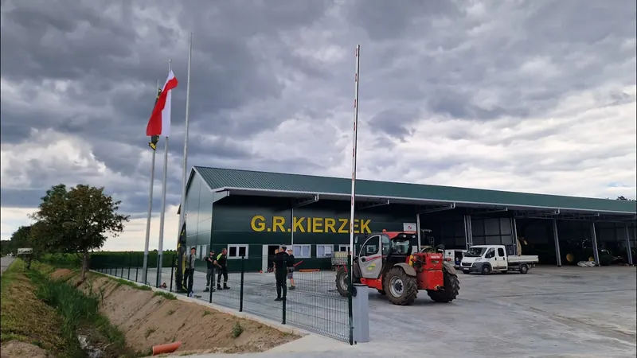
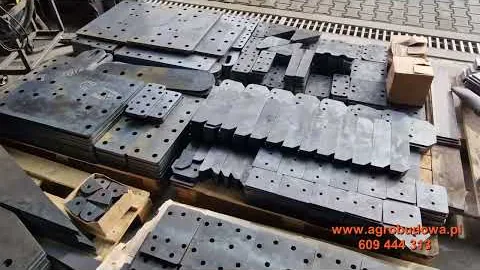
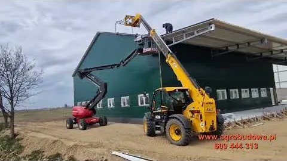

Hala na maszyny z warsztatem i zapleczem socjalnym 70x20 m
Malczew, gospodarstwo GR Kierzek
Hala w całości z płyty warstwowej PIR 60 mm, wewnątrz ściana oporowa na 220 cm od posadzki. Przed halą plac manewrowy 3000 m2 z posadzki przemysłowej.